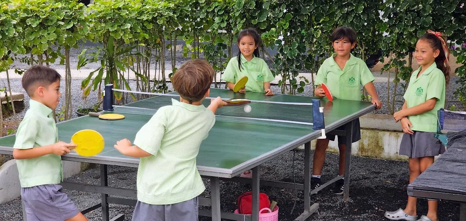

Clubs & Extra-Curricular Activities
Opportunities beyond the classroom that allow students to try new activities, develop interests and build confidence.
Learning continues beyond lessons
Greenacre's after-school clubs enrich the curriculum and give students new experiences. The selection varies from term to term according to demand and the opportunities available.
Options may include sport, martial arts, chess and a changing range of academic, creative and practical clubs.

ECA timings
After-school activities run Monday to Thursday from 3:00pm to 3:45pm.
After-school activities run Monday to Thursday from 3:15pm to 4:00pm.
Years 10-11 have timetabled lessons until 4:00pm and do not attend after-school ECAs.
Duke of Edinburgh's Award
Greenacre offers the Duke of Edinburgh's Award for students in Secondary. The programme combines physical activity, skills development, community service and expeditions, supporting independence, teamwork, resilience and personal responsibility.
Regular after-school sessions and planned trips prepare students for the adventurous journey element of the award.
If the video does not play, watch it on YouTube.